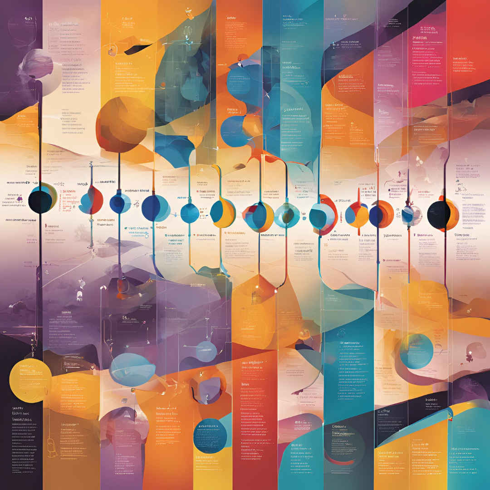

The Philosophical Contributions to Human Understanding: Descartes, Locke, Leibniz, Hume, and Kant

Introduction
Human understanding has been a central theme in philosophy for centuries, with various thinkers offering distinct perspectives on how we acquire knowledge, process information, and perceive reality. Five of the most influential philosophers in this domain—René Descartes, John Locke, Gottfried Wilhelm Leibniz, David Hume, and Immanuel Kant—each contributed significantly to our comprehension of human cognition and epistemology. While Locke and Hume championed empiricism, Descartes and Leibniz leaned towards rationalism, and Kant sought to reconcile these opposing schools of thought. Their ideas continue to shape philosophical discourse on knowledge and understanding.
René Descartes and Rationalist Foundations of Knowledge
René Descartes (1596–1650) was a pioneering rationalist who emphasized reason as the primary source of knowledge. In Meditations on First Philosophy (Descartes 1641), Descartes sought to establish knowledge on an indubitable foundation, famously proclaiming, “Cogito, ergo sum” (“I think, therefore I am”). He argued that reason, rather than sensory experience, is the primary source of knowledge and that certain innate ideas (such as the concept of God and mathematical truths) exist independently of experience. Descartes’ dualistic view of mind and body further influenced later discussions on human cognition and the nature of consciousness.
John Locke and the Theory of Empiricism
John Locke (1632–1704) was a pioneering empiricist who argued that human understanding arises from sensory experience. In his seminal work, An Essay Concerning Human Understanding (Locke 1690), Locke rejected the notion of innate ideas, asserting instead that the mind at birth is a “tabula rasa” (blank slate). According to Locke, all knowledge derives from experience, which he categorized into two forms: sensation (external experiences from the senses) and reflection (internal mental processes). He introduced the distinction between simple and complex ideas, demonstrating how the mind constructs understanding by combining elementary perceptions. Locke’s empiricism laid the foundation for later thinkers, particularly David Hume, and remains a cornerstone of modern epistemology.
Gottfried Wilhelm Leibniz and the Rationalist Expansion
Gottfried Wilhelm Leibniz (1646–1716) further developed rationalist epistemology, proposing that knowledge is derived from innate principles rather than experience. He introduced the idea of “monads,” indivisible and self-contained entities that make up reality, and argued that human understanding results from the unfolding of these preexisting concepts. In New Essays on Human Understanding (Leibniz 1704), Leibniz directly critiqued Locke’s empiricism, contending that the mind contains innate structures that shape experience. His work anticipated later discussions on the nature of perception and cognitive structures.
David Hume and Skepticism about Human Understanding
David Hume (1711–1776), another leading empiricist, built upon Locke’s ideas while adopting a more skeptical approach. In A Treatise of Human Nature (Hume 1739), Hume argued that human knowledge is entirely dependent on experience and that our understanding is shaped by habit and custom rather than logical certainty. He famously questioned the principle of causation, asserting that our belief in cause and effect is based on repeated observation rather than any inherent logical necessity. Hume’s skepticism about the limits of human understanding significantly influenced later philosophical movements, including Kant’s critical philosophy.
Immanuel Kant and the Synthesis of Rationalism and Empiricism
Immanuel Kant (1724–1804) sought to bridge the gap between rationalism and empiricism with his revolutionary Critique of Pure Reason (Kant 1781). He argued that while all knowledge begins with experience, our understanding is shaped by innate cognitive structures, which he termed “categories of understanding.” These categories, such as causality and substance, organize sensory input into coherent knowledge. Kant’s “transcendental idealism” proposed that we can never know reality as it is in itself (the “noumenal world”), but only as it appears to us through our cognitive framework (the “phenomenal world”). His synthesis of rationalist and empiricist elements remains one of the most influential contributions to modern epistemology.
Conclusion
The philosophical contributions of Descartes, Locke, Leibniz, Hume, and Kant have profoundly shaped our understanding of human cognition. Descartes and Leibniz emphasized the primacy of reason, while Locke and Hume championed experience as the basis of knowledge. Kant, recognizing the merits of both approaches, offered a synthesis that continues to influence contemporary philosophy. Their debates on human understanding remain relevant, shaping ongoing discussions in epistemology, psychology, and cognitive science. By engaging with their ideas, we gain deeper insight into the nature of knowledge and the processes through which we comprehend the world.